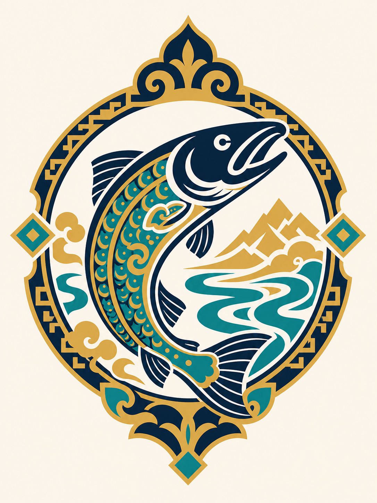

TESVER
Taimen eDNA Expedition for Sensing Vulnerability & Ecosystem Resilience
eDNA, food webs, and landscape change in Mongolia's Eg-Uur watershed
WHAT MAKES A TAIMEN RIVER ENDURE?University of California, Merced
AT LAKE TAHOE
TESVER is a field campaign to Mongolia's Eg-Uur watershed — one of the last intact cold-water river systems on Earth and a global stronghold for taimen (Hucho taimen), the “river wolf” and apex indicator of watershed integrity. The name comes from the Mongolian тэсвэр / tesver — endurance, persistence, hardiness — and frames the project's central question: what allows a wild river system to persist? By pairing environmental DNA, aquatic food-web sampling, and satellite-based geospatial modeling, TESVER reads the living signature of the river and identifies the conditions that sustain it.
An apex predator as a proxy for whole-ecosystem health
Taimen are the world's largest trout, long-lived apex river predators that occur at very low density — often just a few individuals per river mile — and depend entirely on cold, clear, highly oxygenated water. Minor shifts in temperature, water quality, or flow register quickly in their populations, so their health is a direct proxy for the stability of the entire aquatic food web. To sustain the river wolf, a river must sustain cold water, connected channels, productive prey, riparian inputs, refugia, and freedom from disturbance. TESVER's question is therefore practical: what does the river wolf need in order for the river itself to endure?
What, why now, partnership, and the ask
The What
A 10-day expedition sampling 24–30 sites across the Eg, Uur, their confluence, and tributary refugia. eDNA (water + sediment), macroinvertebrate and habitat surveys, and remote sensing combine to map the food web that sustains taimen and the cold-water assemblage.
Why Now
The Eg-Uur is still intact — but riparian degradation, grazing, warming, and access pressure are accelerating. eDNA and remote sensing make a non-invasive, repeatable baseline feasible, and a baseline only has value if captured before the system shifts.
The Partnership
Led by UC Merced and the University of Nevada, Reno at Lake Tahoe, with Mongolian institutional partners, rangers, and local communities — uniting science-first conservation with molecular and remote-sensing innovation and on-the-ground stewardship.
The Ask
Co-sponsorship to carry the expedition from design to deployment — backing for the campaign and its five deliverables: eDNA baseline atlas, food-web synthesis, landscape-change assessment, reach-scale conservation priority map, and a repeatable monitoring protocol.
A 10-day sampling network
From river DNA to satellite
Molecular — eDNA metabarcoding
- 12S fish/vertebrate (MiFish-style) — taimen, lenok, grayling, forage fish
- 16S vertebrate — amphibians, mammals, birds using river margins
- COI metazoan — macroinvertebrates and food-web components
- Optional 18S and a validated taimen-specific qPCR/ddPCR assay
- Paired with guild assignment, habitat data, and local ecological knowledge
Geospatial — remote sensing
- Sentinel-2 — riparian vegetation, water, and land cover
- Harmonized Landsat-Sentinel — multi-year change and thermal exposure
- JRC Global Surface Water — hydrologic persistence and refugia
- DEM-derived confinement, sinuosity, and channel complexity
- Models: occupancy, beta diversity, random forest / BRT, NMDS / dbRDA
A continuation, not a cold start
TESVER extends a continuous longitudinal study led by University of Nevada, Reno biologists on the Eg River — the upper watershed of Russia's Lake Baikal. That work established taimen as an apex bio-indicator and the scientific and community foundation TESVER builds on: rigorous catch-and-release population dynamics, non-lethal genomics, and a deliberate transition toward non-invasive eDNA. It also paired biological monitoring with cultural restoration and capacity-building — training local youth into lead fish biologists and shifting attitudes from trophy harvest toward stewardship of the river's ecological value.